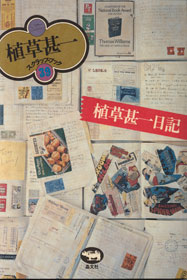
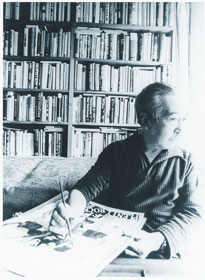

九月の、まだ残暑が厳しい午後。すずらん通りの東京堂書店で、平積みになっていた『植草甚一日記』を買った。晶文社創立45周年記念復刊植草甚一スクラップブックの一冊だ。 この日記の中身は一九七〇年の日々で、つまり歌集『感幻楽』が刊行になった翌年だ。  それにしても、植草はあきれるほど本を買っている。たとえば、八月二十日を見ると（この日は高校一年生だった私の誕生日で、木曜日とある）「朝九時すぎに出発。イエナで注文した本10冊、バーゲン32冊を支払い。あとでまた30冊」とあって都合72冊。一週間前の木曜日はというと「三宿の江口書店へ行き竹内勝太郎全集一巻（2000円は安いので）他文庫をまぜて19冊。三軒茶屋に出て進省堂で２冊。近所を散歩、週刊誌の古本など12冊、単行本２冊」、来週の木曜日は「イエナで２冊、六本木の誠志堂で雑誌36冊、単行本６冊」。三回の木曜だけで約150冊。もちろん、木曜日にしか本を買わないわけではない。 11月16日（月） 三浦さん「ユリイカ」が出来たので来る。「群黎」を持参。  という一行があった。当時ユリイカの編集長だった三浦雅士が、自社（青土社）から出したばかりの佐佐木幸綱の第一歌集『群黎』を持ってきた、というのだ。定型文学などおよそ似合いそうもない植草が、貰った歌集の名前をわざわざあげている。 母棄つる時機うしなひしかな かひこ十六本の足みなうごく
ところで、16日の月曜日にやって来た三浦さんは、次週の25日の水曜日にまたやって来る。この日は「晴れ」。たしか、私の通っていた高校は、水曜日は部活のため五時限で授業が終わった。それであの日の午後は図書館にいたのか。 11月25日（水）晴 朝九時「ユリイカ」のカット出来る。三浦さんが十二時ころ来たとき、三島事件のニュースがＴＶで入る。それから寝た。やはりこの事件を考えはじめる。（中略）夕刊を買いに行き、三島の作家論をキリン堂で買う（二十冊以上あったが、翌日には二冊になっていた） この日の三島由紀夫の書斎にも、歌集『感幻楽』はあったはずなのだ。というのは、今年（二〇〇五年）の八月に出た『塚本邦雄の宇宙』という追悼集に、この歌集、つまり『感幻楽』の三島由紀夫旧蔵本に触れた文章がある。三島が丸印を付けたのは十三首。それが紹介されていた。 （この項続く） |
内堀弘（うちぼり・ひろし） |